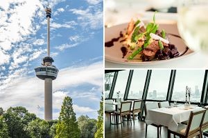
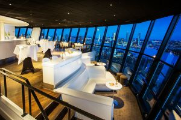
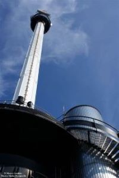

| 
Een echte toeristische attractie met een ruim aanbod aan avontuur |
Geweldig restaurant |
 Geweldig uitzicht op Rotterdam in een prachtige kamer Geweldig uitzicht op Rotterdam in een prachtige kamer |
| 
Met de euroscoop naar de top |
 Met je maatje de afdaling beleven! Met je maatje de afdaling beleven! |
 Alles voor de adrenalinekick! Alles voor de adrenalinekick! |
 Rijksmonument in de spotlight Rijksmonument in de spotlight |
 net als expedition outdoor maar dan van 100 meter af net als expedition outdoor maar dan van 100 meter af |
 Mooiste monument aan de Parkhaven Mooiste monument aan de Parkhaven |
Muziekje erbij voor de liefhebber !
| |